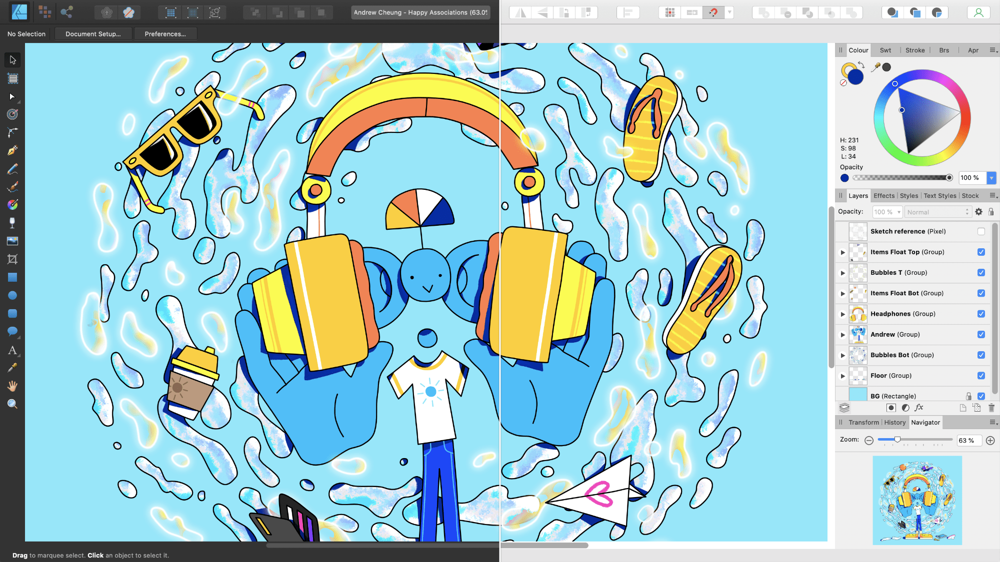

Affinity Designer has a dark User Interface (UI) by default. This makes it easier to accurately view and edit the colors in your designs. However, you can swap the UI interface from dark to light (and vice versa), adjust the background grayscale or the overall Gamma for contrast changes.

To change the UI from dark to light (or vice versa):
Choose Affinity Designer>Preferences.
Choose Edit>Preferences.
Click the User Interface label.
For UI Style, choose either Dark or Light.
To change the UI background, Artboard background or Gamma level:
Choose Affinity Designer>Preferences.
Choose Edit>Preferences.
Click the User Interface label.
Drag the sliders to set the Background Gray level, Artboard Background Gray level and/or UI Gamma level.